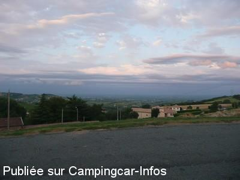
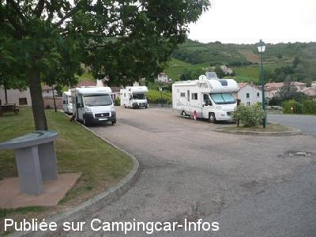

APN = Parking toléré jour/nuit de :
PRUZILLY
(N° 614)
Accès/adresse :
D469
71570 PRUZILLY
71570 PRUZILLY
Latitude : (Nord) 46.25834° Décimaux ou 46° 15′ 30′′
Longitude : (Est) 4.69806° Décimaux ou 4° 41′ 53′′
Tarif : Gratuit
Services :


Autres informations :
Ouverte toute l'année
6 emplacements
Tel : +33(0)385 351 194

Le 30/07/2009 par jeronymo77

Le 30/07/2009 par jeronymo77
de
M.ter Bruggen
le 22/08/2012 :
Good place to spend the night and the view is great.
Whe have see no shop to buy.
Good place to spend the night and the view is great.
Whe have see no shop to buy.
de
cc904
le 03/06/2011 :
toujours d'actualité,très calme nous étions seul,il y a un robinet avec le nez fileté à l'extérieur du sanitaire
toujours d'actualité,très calme nous étions seul,il y a un robinet avec le nez fileté à l'extérieur du sanitaire
de
jeronymo77
le 30/07/2009 :
Je suis passé sur cette aire fort sympatique, de retour de Corse. Stationnement possible pour 6 CC environ, WC avec possibilité de vider la K7 dedans à discrétion, eau et grille à disposition. Vue magnifique sur une vallée pleine de charme.
Le stationnement et les services sont gratuits, mais l'on peut donner une participation dans la porte en bois au fond du parking. Merci à Pruzilly pour cette réalisation.
Je suis passé sur cette aire fort sympatique, de retour de Corse. Stationnement possible pour 6 CC environ, WC avec possibilité de vider la K7 dedans à discrétion, eau et grille à disposition. Vue magnifique sur une vallée pleine de charme.
Le stationnement et les services sont gratuits, mais l'on peut donner une participation dans la porte en bois au fond du parking. Merci à Pruzilly pour cette réalisation.
de
le 17/09/2001 :
Effectivement une aire de stationnement. WC publiques tout près avec deux robinets marqués "eau potable", mais il n'y a aucun point spécifique pour vidanger les eaux usées ou noires. Néanmoins, visitez Pruzilly pour les panoramas magnifiques. Un panneau d'information indique qu'il y a deux autres aires CC (pas aires de services) à St Amour Bellevue et Romanèche Thorins.
Effectivement une aire de stationnement. WC publiques tout près avec deux robinets marqués "eau potable", mais il n'y a aucun point spécifique pour vidanger les eaux usées ou noires. Néanmoins, visitez Pruzilly pour les panoramas magnifiques. Un panneau d'information indique qu'il y a deux autres aires CC (pas aires de services) à St Amour Bellevue et Romanèche Thorins.